Click the buttons below to turn the settings off and on.
Sound Speech Hints Visual Hints Reset ProgressWe created this trainer to make learning Morse code more fun. Give it a try using the on screen buttons or input device of your choice.
This experiment was originally developed by Google to support Morse code for accessible communication. Learn More at g.co/morse.
Built by Tania Finlayson, Use All Five, Google Creative Lab and AceCentre
Dot Keys
Dash Keys
Ace Centre are researching into the time it takes people to learn morse code with learning methods. To enable this we need to collect some anonymous data as you learn. We will only collect your playtime, your progress and your game settings. You will be tracked with a cookie, but we won’t save any personal data.
We will only collect your play time, your progress and your game settings. You will be tracked with a cookie, but we won’t save any personal data.
If you are okay with us collecting this data press the button below and get playing!